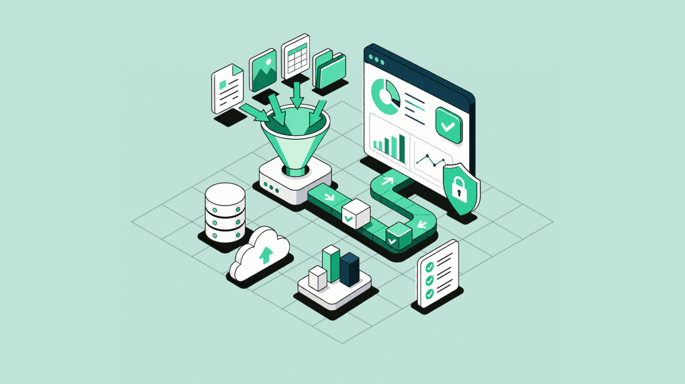
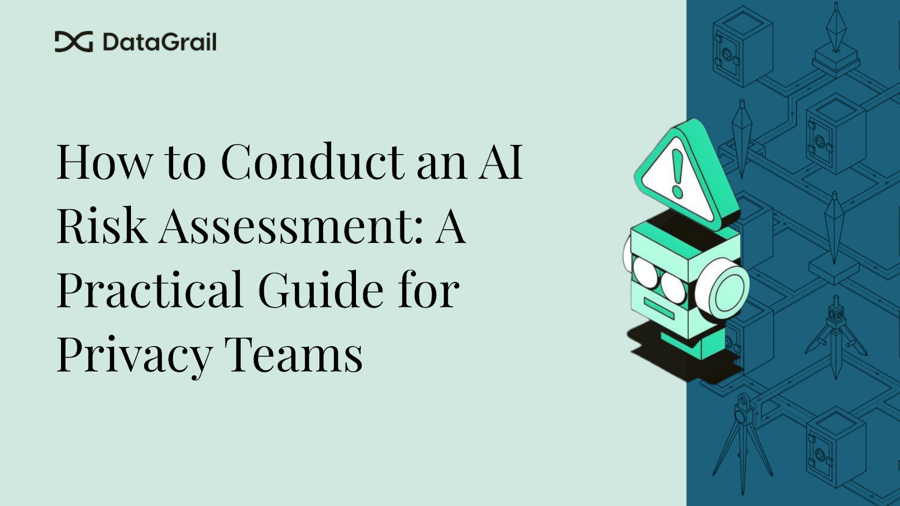
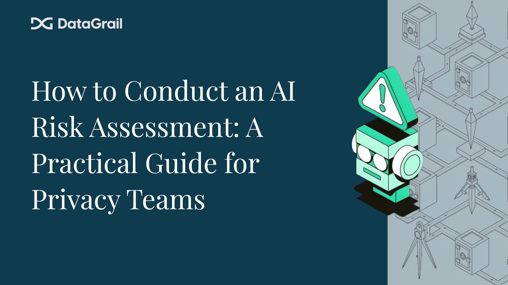
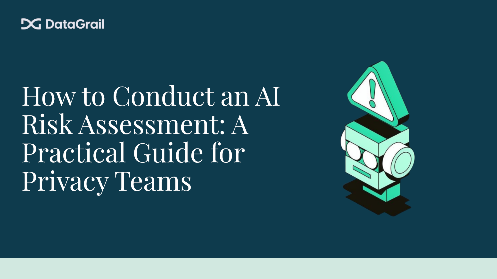

How to Conduct an AI Risk Assessment: A Practical Guide for Privacy Teams
AI systems now trigger mandatory risk assessments under GDPR, the EU AI Act, and US state laws. Here's how to conduct one — and what changes when AI is involved.
The EU AI Act's high-risk AI obligations take full effect August 2, 2026. For US privacy teams, Colorado's AI Act is already in force. The CPRA has required privacy risk assessments since January 1, 2026.
An AI risk assessment is a structured process used to identify, evaluate, and mitigate the risks that an AI system poses to individuals' rights and freedoms — specifically how it processes personal data and whether it makes automated decisions that affect people's lives. It goes beyond a standard DPIA. AI systems retrain, drift, and change behavior after deployment. The regulations that govern them now span three continents. And the deadline to have your governance in order is no longer theoretical.
Key Takeaways
- An AI risk assessment evaluates how an AI system processes personal data and affects individuals' rights
- It is required under GDPR Article 35, EU AI Act Article 27 (FRIA), CPRA, and the Colorado AI Act
- It differs from a standard DPIA because AI systems can retrain, drift, and produce automated decisions long after launch
- For high-risk AI in the EU, both a DPIA and a Fundamental Rights Impact Assessment are required — run the DPIA first, then expand it
- Discovery has to come before assessment: you cannot evaluate systems you don't know exist
What Is an AI Risk Assessment?
An AI risk assessment is an evaluation of how an artificial intelligence system collects, uses, and processes personal data, what automated decisions it makes, and what harm those activities could cause to individuals. It is not a single document type — it is a process that produces documentation satisfying requirements under several overlapping regulatory frameworks depending on where your organization operates and what your AI does.
There are two main assessment types privacy teams need to understand.
AI DPIA (Data Protection Impact Assessment for AI)
A DPIA is required under GDPR Article 35 whenever a processing activity is "likely to result in a high risk to the rights and freedoms of natural persons." AI systems that make automated decisions, use biometric data, profile individuals, or process personal data at scale almost always meet this threshold. The assessment must be completed before the processing begins — not after the tool is already live.
The DPIA asks three core questions: what personal data is being used, what risks that use creates for individuals, and how those risks are being mitigated. Deployers of high-risk AI in the EU who are also subject to GDPR must run a DPIA as a prerequisite — and then extend it.
Fundamental Rights Impact Assessment (FRIA)
The FRIA is a newer requirement introduced by EU AI Act Article 27, applicable to deployers of high-risk AI systems. It covers a broader set of concerns than the DPIA: not just data protection, but discrimination, access to essential services, safety, and the right to explanation.
The EU AI Act explicitly states that the DPIA and FRIA should be run in sequence, not in parallel. Complete the DPIA first. Then expand it to address the fundamental rights dimensions the AI Act requires. Organizations that have already invested in GDPR compliance infrastructure have a material head start.
US-Equivalent Assessments
In the United States, there is no single federal mandate, but state laws are creating real obligations fast. California's CPRA requires "Privacy Risk Assessments" for high-risk processing activities — effective January 1, 2026. Colorado's AI Act (SB 24-205) mandates algorithmic impact assessments for consequential AI decisions in housing, employment, and lending — effective June 30, 2026. The NIST AI Risk Management Framework (AI RMF) provides the de facto operational standard for teams building US-facing governance programs.

When Is an AI Risk Assessment Required?
Not every AI tool triggers a formal assessment. But more qualify than most teams expect — and the ones that do tend to be the same tools your product, HR, and marketing teams are already using.
GDPR Triggers
European data protection authorities have identified categories of processing that almost always require a DPIA. If your AI system falls into any of the following, you need one:
- Using new or novel technologies such as ML or AI — nearly any commercially deployed AI tool qualifies as "novel" in the GDPR's sense, because its outputs are probabilistic rather than deterministic
- Automated decision-making with legal or significant effect — hiring tools, credit scoring models, content moderation systems, insurance pricing engines
- Large-scale processing of personal data — customer analytics platforms, behavioral profiling at scale
- Special categories of personal data — health data, biometric data, data about children, political opinions
- Systematic monitoring of behavior — employee productivity monitoring, location tracking, web behavior analytics
- Profiling individuals — any system that infers characteristics, preferences, or risk scores about people
EU AI Act High-Risk Categories (Annex III)
EU AI Act Article 6 defines the classification logic for high-risk AI systems. Unacceptable-risk practices are prohibited. High-risk systems face mandatory assessment, documentation, and human oversight requirements before August 2, 2026.
| AI Use Case | Risk Classification |
|---|---|
| Recruitment screening / CV filtering | High-risk |
| Credit scoring / loan decisions | High-risk |
| Insurance pricing | High-risk |
| Student performance evaluation | High-risk |
| Biometric identification | High-risk |
| Medical device decision support | High-risk |
| Law enforcement profiling | High-risk |
| Emotion recognition in the workplace | Prohibited (since February 2025) |
| Social scoring by government | Prohibited |
| Customer service chatbot (no consequential decisions) | Limited risk |
| Internal document summarization | Minimal risk |
| Spam filter | Minimal risk |
One important note: any AI system that profiles individuals — meaning it uses automated processing to assess their work performance, economic situation, health, preferences, behavior, or location — is always considered high-risk under Annex III, regardless of the industry or use case.
US Triggers
California's CPRA requires privacy risk assessments before processing activities that involve sensitive personal information, automated decision-making, or large-scale profiling of consumers. These obligations became enforceable January 1, 2026 — meaning assessments that haven't been completed are already overdue.
Colorado's AI Act (SB 24-205) requires developers and deployers of high-risk AI making consequential decisions in housing, employment, education, and financial services to implement risk management programs that include mandatory impact assessments and consumer disclosures. Effective date: June 30, 2026.
Shadow AI complicates both. If an employee is using an AI tool that IT didn't deploy and legal didn't review, it may still be processing personal data — and your organization may still be the data controller. You can't assess systems you don't know exist.
How an AI Risk Assessment Differs from a Standard DPIA
If you've been running DPIAs for years, you have a foundation. But AI introduces three specific complications that standard DPIA programs aren't built to handle.
AI Systems Change After Deployment
A traditional DPIA assesses a static system at a point in time. An AI model can retrain on new data, be fine-tuned by a vendor, or shift its outputs in response to changing inputs — all without any code deployment on your end. A DPIA completed at launch may not reflect how the system is actually processing data six months later. AI risk assessment programs need scheduled renewal cycles built in, not optional follow-ups.
Automated Decision-Making Adds a New Rights Layer
Standard DPIAs focus on data protection. AI assessments must also address GDPR Article 22 — the right not to be subject to decisions based solely on automated processing. They must address the EU AI Act's new Article 86, which gives individuals the right to explanation for any decision made by a high-risk AI system that significantly affects them. And they must address anti-discrimination obligations across employment, lending, and public services. The FRIA exists precisely because a data-focused lens isn't wide enough for what AI does.
Shadow AI Makes Discovery Harder
With traditional software, IT knows what's deployed. With AI, employees adopt tools — ChatGPT, Gemini, Grammarly, Notion AI, Salesforce Einstein — before any formal review happens. Research has found that 1 in 5 organizations has experienced a breach attributable to shadow AI. The implication for risk assessment programs is structural: discovery must precede assessment, and discovery requires connecting to the systems where AI adoption actually shows up — your identity provider, your SSO logs, your SaaS connections.

How to Conduct an AI Risk Assessment
Here is the process privacy teams can follow, from discovery through documentation and renewal.
Step 1 — Inventory Your AI Systems
You cannot assess risk in systems you haven't identified. Start by building or updating your AI system inventory to include:
- IT-sanctioned tools — tools procured through formal vendor review (documented)
- AI features embedded in existing SaaS — often undocumented; Salesforce Einstein, HubSpot AI, Zendesk AI, Microsoft Copilot, and hundreds of others have embedded AI capabilities that may now qualify as high-risk processing
- Shadow AI — tools adopted by departments without formal review; this is where the real exposure lives
The most practical starting point is connecting your identity provider (Okta, Microsoft Entra ID, Google Workspace) to surface every SaaS application connected to your organization. Daily scans catch new tools as they're added, rather than relying on employees to self-report.

Step 2 — Classify Each System by Risk Level
Not every AI tool needs the same depth of review. A tiered approach prevents assessment paralysis while ensuring the highest-risk systems get the attention the law requires.
Tier 1 — Full DPIA + FRIA required: Systems that make or materially influence consequential decisions about people — hiring, lending, healthcare, access to public services, insurance pricing, or law enforcement. These require formal assessment before deployment, human-in-the-loop oversight, and audit-ready documentation.
Tier 2 — DPIA recommended: Systems that process large volumes of personal data, use behavioral profiling, or involve special categories of data (health, biometric, children's). No EU AI Act conformity assessment required, but GDPR Article 35 almost certainly applies.
Tier 3 — Lightweight review: Internal productivity tools with no personal data output and no consequential decisions. Document the classification and the rationale. Under the EU AI Act, providers of systems they believe are not high-risk must document that assessment before going to market.
Step 3 — Gather Information About the System
For each system in Tier 1 or Tier 2, document the following before completing the assessment:
- What personal data is collected, from whom, and under what legal basis
- How the model was trained, and whether training data included personal data
- Whether training data can be reproduced in model outputs (right to erasure risk)
- Which third-party subprocessors are involved, and where data is processed geographically
- Whether the system makes automated decisions with legal or significant effect
- Retention settings and whether data minimization practices are implemented
- Security controls: access controls, encryption, prompt filtering, output controls
Vendors are required to provide much of this information under GDPR Article 28 and EU AI Act Article 13. If a vendor refuses to supply documentation about training data, subprocessors, or decision logic, that is itself a risk signal that belongs in your assessment.
The same system details should also connect back to the Record of Processing Activities, so the risk assessment supports the broader privacy program instead of living as a disconnected document.

Step 4 — Assess Risk to Individuals
For each identified risk, evaluate it on two dimensions: likelihood (remote, possible, or probable) and severity (minor inconvenience through fundamental rights violation). Key categories to work through:
Discriminatory outcomes — Does the AI system use proxies that could produce biased results across protected characteristics? Recruitment AI trained on historical hiring data is a well-documented example. Credit scoring models that use ZIP code as a proxy for race are another.
Privacy violations — Can the model reproduce training data? Is sensitive personal information accessible through prompt injection? Does the system leak data across users in a multi-tenant deployment?
Loss of autonomy — Can an individual appeal a decision the AI made? Is there a human in the loop for high-stakes outcomes? The EU AI Act's Article 86 right to explanation specifically addresses this.
Security vulnerabilities — Is the system protected against adversarial inputs, prompt injection, and model inversion attacks? Agentic AI systems that call APIs and tools without human oversight in the loop carry a meaningfully different attack surface than static classifiers.
Reputational harm from inaccurate outputs — Hallucinations in customer-facing AI, inaccurate risk scores, and incorrect automated decisions all create legal exposure beyond the initial compliance question.
Step 5 — Identify and Document Mitigation Measures
For every identified risk, document what you're doing about it. Regulators don't just want a list of risks — they want evidence that you weighed the benefits against the harms and implemented proportionate controls.
Technical controls: Data minimization (don't collect what you don't need), access controls, encryption in transit and at rest, output filtering for sensitive information, human-in-the-loop review gates for high-stakes decisions.
Organizational controls: Approval workflows before new AI systems go live, audit logs for AI-influenced decisions, defined escalation paths when the AI produces an unexpected outcome, documented AI acceptable use policies.
Contractual controls: Data processing agreements with AI vendors should address training data rights (is your data being used to train models for other customers?), subprocessor disclosure, breach notification timelines, and the right to audit.
If residual risk remains high after controls are applied — meaning the harm is still probable and severe — GDPR Article 36 requires you to consult your supervisory authority before proceeding.
Step 6 — Assign Contributors and Route for Approval
AI risk assessment is not a single-person job. The privacy team, legal, engineering, and the system owner each hold different pieces of the information you need. A well-run assessment process assigns each stakeholder a specific contribution, sets a deadline, and routes to a DPO or Risk Assessments Admin for final approval before the PDF is locked.
A contributor doesn't need a DataGrail account to participate — they receive an invitation link, complete their section, and submit it. The assessment owner reviews all contributions before approving. Once approved, the assessment is locked and a downloadable PDF is generated for your audit record.
Step 7 — Set a Renewal Cycle and Treat It as a Living Document
A completed and approved assessment is not a permanent pass. In DataGrail Risk Management documentation, the renewal cycle is treated as part of the assessment setup, not an afterthought. Set a renewal cycle at the time you create the assessment. Plan for a mandatory reassessment when any of the following occur:
- The model is retrained on new or different data
- The system's use case changes materially (e.g., a customer-facing chatbot is expanded to make credit eligibility decisions)
- A new regulation takes effect in a relevant jurisdiction
- Your data map shows new systems connecting to the same processing activity
- An incident occurs that calls your original risk analysis into question
At a minimum, conduct a formal review annually. Assessments that go more than 180 days without review should trigger an automatic flag — the AI landscape and regulatory environment both move too fast for a "set it and forget it" approach.

What Each Regulation Requires: A Quick Reference
| Regulation | Assessment Type | When Required | Enforcement Deadline |
|---|---|---|---|
| GDPR Article 35 | DPIA | Before high-risk processing | Ongoing |
| EU AI Act Article 27 | Fundamental Rights Impact Assessment (FRIA) | Before deploying high-risk AI | August 2, 2026 |
| CPRA (California) | Privacy Risk Assessment | Sensitive data, automated decisions, large-scale profiling | January 1, 2026 |
| Colorado AI Act (SB 24-205) | Algorithmic Impact Assessment | Consequential decisions — housing, employment, lending | June 30, 2026 |
| LGPD (Brazil) Article 37 | Data Protection Assessment | High-risk processing | Ongoing |
On fines: Under GDPR, failing to conduct a required DPIA is a direct, standalone violation — fines up to €10 million or 2% of global annual revenue, separate from any underlying breach. Under the EU AI Act, non-compliance with high-risk AI obligations carries fines up to €15 million or 3% of global annual turnover. Regulators who find assessment gaps tend to dig deeper. A documentation failure is often the entry point for a much larger investigation.
For additional practitioner context, this draft cross-checked regulatory timing and DPIA/FRIA sequencing against public analysis from Lowenstein Sandler and Secure Privacy, then prioritized official regulatory sources for the final recommendations.
Common Mistakes Privacy Teams Make
For broader context on building operational controls instead of static policy docs, see DataGrail's related article: When AI Policies Aren't Enough: Why Real Governance Requires Controls, Not Just Documents.
Treating the EU AI Act and GDPR as Separate Programs
When AI processes personal data, both apply simultaneously. Building two parallel compliance tracks doubles the work and creates documentation inconsistencies that look bad in an audit. The right approach is one unified assessment that starts with the DPIA and expands into the FRIA. The EU AI Act explicitly endorses this sequencing — the two are designed to complement each other, not compete.
Only Assessing the AI Tools IT Procured
The systems your IT team knows about are not the systems creating the most exposure. Shadow AI — tools employees adopt independently — processes company data and sometimes customer personal data without any governance. A vendor risk questionnaire sent to your approved tools list won't catch the AI writing assistant your marketing team started using last month. Discovery has to come first, and it has to be automated.
Completing One Assessment and Calling It Done
A DPIA approved at deployment is already starting to go stale. AI models retrain. Vendors update their infrastructure. New regulations come into force. The CPPA's automated decision-making regulations begin enforcement in January 2027, meaning your current assessments may not satisfy requirements that are six months away. Build renewal cycles in from the beginning. Static governance for dynamic systems is compliance theater.
Skipping the Proportionality Analysis
Regulators don't just want a list of risks. They want evidence that you weighed the benefits against the harms and made a documented judgment about necessity and proportionality. A DPIA that identifies ten risks and says "mitigation: in progress" is not a DPIA — it's a placeholder. Incomplete assessments are enforceable violations under GDPR Article 35, not just sloppy documentation.
How Automation Changes the Equation
Privacy teams running lean — which is most of them — can't manually interview every system owner for every AI tool on an annual renewal cycle. The math doesn't work. Automation addresses three specific bottlenecks.
Discovery at scale. Connecting your SSO provider to a live data map surfaces AI tools employees are actually using, including the ones IT doesn't know about. Daily scanning catches new tools as they're added rather than relying on someone to remember to flag it.
Pre-populated assessments. A platform with deep integration coverage already knows what most SaaS tools process. Pre-filled data categories, typical processing purposes, and known subprocessors reduce the research burden dramatically — you're reviewing and confirming rather than building from scratch. Vera, DataGrail's AI agent, goes further: it analyzes your live data map, uploaded documents like PRDs and DPAs, and your organization's business context to suggest answers for all assessment questions, citing its sources so your team can review with confidence.
Automated renewal tracking. Assessments that exceed their review cycle trigger automatic flags. When a new system is detected that connects to an existing processing activity, the relevant assessments surface for review. When a regulation changes, your team gets context about which assessments may need updating.
That is why a purpose-built AI approach for privacy programs matters more than a generic AI layer. DataGrail for AI Governance connects AI inventory, risk assessment, documentation, and renewal workflows inside the privacy operating system teams already use.

The goal is to shift assessment work from reactive (scrambling to document before an audit) to continuous (assessments that stay current because the program is built to maintain them).
Frequently Asked Questions
What is an AI risk assessment?
An AI risk assessment is a structured process used to identify, evaluate, and mitigate risks to individuals' rights and freedoms that arise from how an AI system processes personal data or makes automated decisions. It is required under GDPR Article 35, the EU AI Act, and equivalent US state privacy laws including CPRA and the Colorado AI Act.
Is an AI risk assessment the same as a DPIA?
Not exactly. A DPIA focuses specifically on data protection risks under GDPR. An AI risk assessment is broader — it must also address bias, fundamental rights, explainability, and the dynamic behavior of AI systems that retrain or evolve after deployment. For high-risk AI in the EU, both a DPIA and a Fundamental Rights Impact Assessment (FRIA) are required under the EU AI Act. The two are designed to be run in sequence, not separately.
When is an AI risk assessment legally required?
Under GDPR, a DPIA is required before processing "likely to result in high risk" — including most AI systems that make automated decisions, use biometric data, or process data at scale. Under the EU AI Act, a FRIA is required for deployers of high-risk AI systems before deployment, with full enforcement beginning August 2, 2026. CPRA risk assessments took effect January 1, 2026. Colorado's AI Act requires impact assessments for consequential AI decisions as of June 30, 2026.
What AI systems are considered high-risk under the EU AI Act?
The EU AI Act's Annex III lists high-risk categories including AI used in recruitment and employment decisions, credit scoring, insurance pricing, medical device decision support, biometric identification, education and vocational training assessment, law enforcement, and immigration decisions. Any AI system that profiles individuals — automated processing that assesses their behavior, location, performance, economic situation, or preferences — is always considered high-risk.
How is an AI risk assessment different from a vendor risk assessment?
A vendor risk assessment evaluates whether a third-party supplier is trustworthy and secure as an organization. An AI risk assessment evaluates whether a specific AI system — regardless of who built it — is safe to deploy given the personal data it processes and the automated decisions it makes. You need both: vendor assessment during procurement, AI risk assessment before the system goes live with your users' data.
How often does an AI risk assessment need to be updated?
AI risk assessments should be renewed when the model is retrained on new data, when the use case changes materially, or when new regulations come into effect. At minimum, conduct a formal review annually. Unlike static software, AI systems can change behavior without any code change — assessments that were accurate at launch may not reflect actual risk six months later.
What happens if you deploy a high-risk AI system without completing a risk assessment?
Under GDPR, failure to conduct a required DPIA is a direct compliance violation — separate from any data breach — with fines up to €10 million or 2% of global annual revenue. Under the EU AI Act, non-compliance with high-risk AI obligations carries fines up to €15 million or 3% of global annual turnover. Regulators who find assessment gaps during an audit typically dig deeper into the privacy practices behind them. A documentation failure is frequently the entry point for a much larger investigation.
The Bottom Line
The AI risk assessment deadlines on the calendar right now — August 2026 for the EU AI Act, January 2026 for the CPRA, June 2026 for Colorado — are not future problems. For many organizations, they are current problems with assessments already overdue. The good news is that the work is learnable, the frameworks are documented, and the organizations that invested in GDPR compliance already have the foundation. What changes for AI is the need to treat assessment as a continuous operating discipline rather than a one-time project. Static governance for dynamic systems doesn't hold.
See how DataGrail automates AI risk assessments with Vera → Request a demo